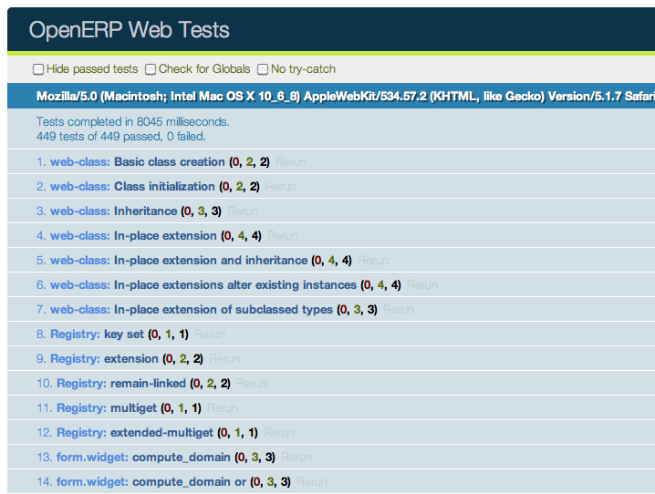
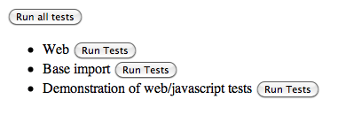
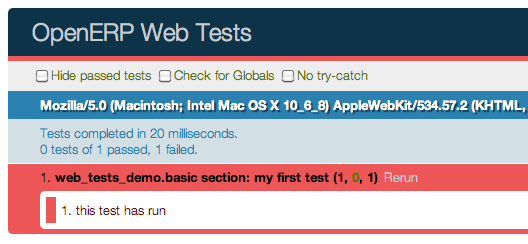
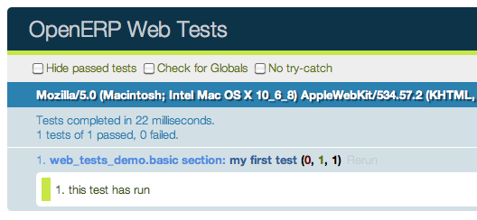

Виджеты
class Widget()
Экспортируется в `` web.Widget``, базовый класс для всех визуальных компонентов. Он соответствует представлению MVC и предоставляет ряд услуг, упрощающих обработку раздела страницы:
Обрабатывает родительские / дочерние отношения между виджетами
Обеспечивает расширенное управление жизненным циклом с функциями безопасности (например, автоматически уничтожая дочерние виджеты во время уничтожения родителя)
Автоматический рендеринг с: ref: [UNKNOWN NODE title_reference]
Совместимые с базовой сетью ярлыки
DOM Root
A: class: [UNKNOWN NODE title_reference] отвечает за раздел страницы, материализованный корнем DOM виджета.
DOM-корень виджета доступен через два атрибута:
Widget.el
Необработанный элемент DOM, установленный как root в виджет
Widget.$el
Оболочка jQuery: attr: [UNKNOWN NODE title_reference]
Существует два основных способа определить и создать этот корень DOM:
Widget.template
Должно быть указано имя a: ref: [UNKNOWN NODE title_reference]. Если установлено, шаблон будет отображаться после инициализации виджета, но до его запуска. Корневой элемент, сгенерированный шаблоном, будет установлен как корень DOM виджета.
Widget.tagName
Используется, если виджет не имеет определенного шаблона. По умолчанию `` div``, будет использоваться как имя тега для создания элемента DOM, который будет установлен в качестве корня DOM для виджета. Можно дополнительно настроить этот сгенерированный корень DOM со следующими атрибутами:
Widget.id
Используется для генерации атрибута `` id`` для сгенерированного корня DOM.
Widget.className
Используется для генерации атрибута `` class`` для сгенерированного DOM-корня.
Widget.attributes
Сопоставление (литерал объекта) имен атрибутов с значениями атрибутов. Каждая из этих пар k: v будет установлена как атрибут DOM в сгенерированном корне DOM.
Ни один из них не используется, если шаблон указан в виджете.
Корень DOM также может быть определен программно путем перевыбора
Widget.renderElement()
Отображает корень DOM виджета и устанавливает его. Реализация по умолчанию выдаст заданный шаблон или создаст элемент, как описано выше, и выведет: func: [UNKNOWN NODE title_reference] на результат.
Любые переопределения для: func: [UNKNOWN NODE title_reference], который не вызывает его` [UNKNOWN NODE title_reference] [UNKNOWN NODE problematic], должен ** вызывать: func:` ~ Widget.setElement` с тем, что он сгенерировал, или поведение виджета не определено.
Примечание
По умолчанию: func: [UNKNOWN NODE title_reference] может быть вызван повторно, он * заменит * прежний корень DOM (с помощью` [UNKNOWN NODE title_reference]). Однако это требует, чтобы виджет правильно устанавливал и отменял свои события (и дочерние виджеты). Как правило: func: [UNKNOWN NODE title_reference] не следует вызывать многократно, если виджет не рекламирует эту функцию.
Использование виджета
Жизненный цикл виджета состоит из трех основных этапов:
Создание и инициализация экземпляра виджета
Widget.init(parent)Метод инициализации виджетов, синхронный, может быть переопределен для получения большего количества параметров от создателя / родителя виджета
Аргументы- parent (
Widget()) -- Родитель нового виджета, используемый для автоматического уничтожения и распространения событий. Может быть `` null`` для того, чтобы у виджета не было родителя.
- parent (
DOM injection и startup, это делается путем вызова одного из:
Widget.appendTo(element)Визуализирует виджет и вставляет его в качестве последнего потомка цели, использует [UNKNOWN NODE title_reference] _
Widget.prependTo(element)Визуализирует виджет и вставляет его в качестве первого потомка цели, использует [UNKNOWN NODE title_reference] _
Widget.insertAfter(element)Визуализирует виджет и вставляет его в качестве предыдущего сиблинга цели, использует [UNKNOWN NODE title_reference] _
Widget.insertBefore(element)Визуализирует виджет и вставляет его как следующий родственник цели, использует [UNKNOWN NODE title_reference] _
Все эти методы принимают то, что принимает соответствующий метод jQuery (селектор CSS, узлы DOM или объекты jQuery). Все они возвращают deferred и отвечают за три задачи:
Рендеринг корневого элемента виджета с помощью: func: [UNKNOWN NODE title_reference]
Вставка корневого элемента виджета в DOM с использованием любого подходящего метода jQuery
Запуск виджета и возврат результата его запуска
Widget.start()Асинхронный запуск виджета, как только он был введен в DOM, обычно используется для выполнения асинхронных вызовов RPC для получения любых удаленных данных, необходимых для работы виджета.
Необходимо вернуть deferred, чтобы указать, когда его работа выполнена.
Виджет * не гарантирован * корректно работает до тех пор, пока его метод: func: [UNKNOWN NODE title_reference] не завершится. Родитель / создатель виджета должен дождаться полного запуска виджетов, прежде чем взаимодействовать с ним
РезультатОбъект deferred
Уничтожение и очистка виджета
Widget.destroy()Уничтожает дочерние элементы виджета, развязывает его события и удаляет его корень из DOM. Автоматически вызываемый при разрушении родительского элемента виджета должен быть вызван явно, если у виджета нет родителей или если он удален, но его родительский элемент остается.
Виджет, уничтожаемый автоматически, отключается от родителя.
Важное значение имеет утилита, связанная с уничтожением виджетов:
Widget.alive(deferred[, reject=false])
Существенной проблемой RPC и разрушения является то, что вызов RPC может занять много времени, чтобы выполнить и вернуть в то время, когда виджет уничтожается или после его уничтожения, пытаясь выполнить свои операции над виджетами в сломанном / недопустимом состоянии.
Это частый источник ошибок или странного поведения.
: Func: [UNKNOWN NODE title_reference] можно использовать для переноса вызова RPC, гарантируя, что любые операции должны выполняться, когда завершение вызова выполняются, только если виджет все еще жив:
this.alive(this.model.query().all()).then(function (records) {
// would break if executed after the widget is destroyed, wrapping
// rpc in alive() prevents execution
_.each(records, function (record) {
self.$el.append(self.format(record));
});
});
Widget.isDestroyed()
Доступ к содержимому DOM
- Поскольку виджет отвечает только за содержимое, расположенное ниже корня DOM,
- is a shortcut for selecting sub-sections of a widget's DOM:
Widget.$(selector)
Применяет CSS-селектор, указанный в качестве параметра к корню DOM виджета
this.$(selector);
Функционально идентичен
this.$el.find(selector);
- selector (
String) -- Селектор CSS
Примечание
Этот вспомогательный метод похож на `` Backbone.View. $ ``
Сброс корня DOM
Widget.setElement(element)
Переустанавливает корень DOM виджета на предоставленный элемент, также обрабатывает повторную установку различных псевдонимов корня DOM, а также отмену и переустановку делегированных событий.
- element (
Element) -- Элемент DOM или объект jQuery для установки в качестве корня DOM виджета
Примечание
Должен быть в основном совместим с [UNKNOWN NODE title_reference]
Обработка событий DOM
Виджет обычно должен реагировать на действия пользователя в пределах своего раздела страницы. Это влечет за собой связывание событий с элементами DOM.
Для этого: class: [UNKNOWN NODE title_reference] предоставляет ярлык:
Widget.events
События - это отображение селектора событий (имя события и необязательный селектор CSS, разделенные пробелом) на обратный вызов. Обратный вызов может быть именем метода виджета или функционального объекта. В любом случае, `` this`` будет установлен в widget
events: {
'click p.oe_some_class a': 'some_method',
'change input': function (e) {
e.stopPropagation();
}
},
Селектор используется для «делегирования событий» jQuery, обратный вызов будет инициирован только для потомков корня DOM, соответствующих селектору [#eventsdelegation] _. Если селектор не указан (указывается только имя события), событие будет установлено непосредственно в корне DOM виджета.
Widget.delegateEvents()
Этот метод отвечает за привязку: attr: [UNKNOWN NODE title_reference] для DOM. Он автоматически вызывается после установки корня DOM в виджете.
Его можно переопределить, чтобы установить более сложные события, чем позволяет: attr: [UNKNOWN NODE title_reference] map, но родитель должен всегда вызываться (или: attr:` ~ Widget.events` не будет обработан правильно).
Widget.undelegateEvents()
Этот метод отвечает за отмену привязки: attr: [UNKNOWN NODE title_reference] из корня DOM при разрушении виджета или перезагрузке корня DOM, чтобы избежать выхода из« фантомных »событий.
Он должен быть переопределен для отмены любого установленного события в переопределении: func: [UNKNOWN NODE title_reference].
Примечание
Это поведение должно быть совместимо с Backbone's delegateEvents, за исключением того, что вы не принимаете никаких аргументов.
Виджет подкласса
: Class: [UNKNOWN NODE title_reference] подклассифицируется стандартным образом (с помощью метода: func:` ~ Class.extend`) и предоставляет ряд абстрактных свойств и конкретных методов (которые вы можете или не захотите переопределить). Создание подкласса выглядит так:
var MyWidget = Widget.extend({
// QWeb template to use when rendering the object
template: "MyQWebTemplate",
events: {
// events binding example
'click .my-button': 'handle_click',
},
init: function(parent) {
this._super(parent);
// insert code to execute before rendering, for object
// initialization
},
start: function() {
var sup = this._super();
// post-rendering initialization code, at this point
// allows multiplexing deferred objects
return $.when(
// propagate asynchronous signal from parent class
sup,
// return own's asynchronous signal
this.rpc(/* … */))
}
});
Новый класс можно затем использовать следующим образом:
// Create the instance
var my_widget = new MyWidget(this);
// Render and insert into DOM
my_widget.appendTo(".some-div");
После выполнения этих двух строк (и любое обещание, возвращаемое функцией: func: [UNKNOWN NODE title_reference] было разрешено, если необходимо), виджет готов к использованию.
Примечание
Методы вставки будут запускать сам виджет и возвратят результат: func: [UNKNOWN NODE title_reference].
Если по каким-то причинам вы не хотите вызывать эти методы, вам сначала нужно вызвать: func: [UNKNOWN NODE title_reference] на виджете, затем вставить его в DOM и запустить.
Если виджет больше не нужен (потому что он кратковременный), просто завершите его
my_widget.destroy();
Отменит все события DOM, удалит содержимое виджета из DOM и уничтожит все данные виджета.
Руководство по разработке
Идентификаторы (атрибут `` id``) следует избегать. В общих приложениях и модулях `` id`` ограничивает возможность повторного использования компонентов и делает код более хрупким. В большинстве случаев они могут быть заменены ничем, классами или содержать ссылку на узел DOM или элемент jQuery.
Если `` id`` абсолютно необходимо (потому что сторонняя библиотека требует одно), id должен быть частично сгенерирован с помощью `` _uniqueId () `` eg
this.id = _.uniqueId('my-widget-')
Избегайте предсказуемых / общих имен классов CSS. Имена классов, такие как «контент» или «навигация», могут соответствовать желаемому смыслу / семантике, но, вероятно, другой разработчик будет иметь такую же потребность, создавая конфликт имен и непреднамеренное поведение. Имена универсальных классов должны начинаться с префикса, например, именем компонента, к которому они принадлежат (создание «неформальных» пространств имен, как в C или Objective-C).
Следует избегать глобальных селекторов. Так как компонент может использоваться несколько раз на одной странице (пример в Odoo - панели мониторинга), запросы должны быть ограничены областью заданного компонента. Неотфильтрованные варианты, такие как `` (селектор) `` или `` document.querySelectorAll (селектор) [UNKNOWN NODE problematic], обычно приводят к непреднамеренному или неправильному поведению. Odoo Web: class: [UNKNOWN NODE title_reference] имеет атрибут, предоставляющий свой корень DOM (: attr:` ~ Widget. $ El`), и ярлык для выбора узлов напрямую (: func: [UNKNOWN NODE title_reference]).
В более общем плане, никогда не предполагайте, что ваши компоненты владеют или контролируют что-либо за пределами своего личного: attr: [UNKNOWN NODE title_reference]
Html шаблонизатор / рендеринг должен использовать QWeb, если он не является абсолютно тривиальным.
Все интерактивные компоненты (компоненты, отображающие информацию на экране или перехватывающие события DOM) должны наследовать от: class: [UNKNOWN NODE title_reference] и правильно реализовывать и использовать свой API и жизненный цикл.
R∞(pc) = . (14)
Для отображения и взаимодействия с данными необходимы вызовы на сервере Odoo. Это выполняется с помощью: abbr: [UNKNOWN NODE title_reference].
Odoo Web предоставляет два основных API для этого: низкоуровневый API на базе JSON-RPC, взаимодействующий с секцией Python в Odoo Web (и с вашим модулем, если у вас есть часть Python), и с API более высокого уровня, который выше вашего Код для прямого общения с высокоуровневыми моделями Odoo.
Все сетевые API: ref: [UNKNOWN NODE title_reference]. В результате все они будут возвращать объекты Deferred (разрешают ли они те, которые имеют значения или нет). Понимание того, как это работает до того, как двигаться дальше, вероятно, необходимо.
API высокого уровня: вызов моделей Odoo
Доступ к объектным методам Odoo (предоставляемым через XML-RPC с сервера) осуществляется через: class: [UNKNOWN NODE title_reference]. Он отображает объекты сервера Odoo с помощью двух основных методов: func: [UNKNOWN NODE title_reference] (экспортируется в` [UNKNOWN NODE title_reference]) и: func:` ~ Model.query` (экспортируется в `` web.DataModel [UNKNOWN NODE problematic], Доступен только в бэкэнд-клиенте).
: Func: [UNKNOWN NODE title_reference] является прямым отображением соответствующего метода объекта сервера Odoo. Его использование аналогично использованию API-интерфейса Odoo Model с тремя отличиями:
Интерфейс: ref: [UNKNOWN NODE title_reference], поэтому вместо возвращения результатов напрямую вызовы методов RPC будут возвращать экземпляры Deferred, которые сами будут решать результат соответствующего вызова RPC.
Поскольку ECMAScript 3 / Javascript 1.5 не имеет эквивалента `` __getattr__`` или `` method_missing``, должен быть явный метод для отправки методов RPC.
Нет понятия pooler, модель прокси при необходимости создается, а не извлекается из другого (несколько глобального) объекта
var Users = new Model('res.users'); Users.call('change_password', ['oldpassword', 'newpassword'], {context: some_context}).then(function (result) { // do something with change_password result });
: Func: [UNKNOWN NODE title_reference] - это ярлык для интерфейса в стиле строителя для поиска (` `` `` `` `` `` `` `` `` `` `` `` `` `` `` `` `` `` `` `` `` `` `` `` `` `` `` ` Он возвращает объект: class: [UNKNOWN NODE title_reference], который является неизменяемым, но позволяет создавать новые экземпляры: class:` ~ odoo.web.Query` из первого, добавляя новые свойства или изменяя родительский объект
Users.query(['name', 'login', 'user_email', 'signature'])
.filter([['active', '=', true], ['company_id', '=', main_company]])
.limit(15)
.all().then(function (users) {
// do work with users records
});
Запрос выполняется только при вызове одного из методов сериализации запроса: func: [UNKNOWN NODE title_reference] и: func:` ~ odoo.web.Query.first`. Эти методы будут выполнять новый вызов RPC при каждом вызове.
По этой причине на самом деле можно оставить «промежуточные» запросы и использовать их по-разному / добавлять новые спецификации на них.
class Model(name)
Model.name
Имя модели, с которой этот объект связан
Model.call(method[, args][, kwargs])
Вызывает метод `` method`` текущей модели с предоставленными позиционными и ключевыми аргументами.
- method (
String) -- Метод для вызова rpc: attr: [UNKNOWN NODE title_reference] - args (
Array<>) -- Позиционные аргументы для передачи методу, необязательный - kwargs (
Object<>) -- Аргументы ключевого слова для передачи методу, необязательный
Model.query(fields)
- fields (
Array<String>) -- Список полей для извлечения во время поиска
class odoo.web.Query(fields)
Первым набором методов является метод «выборки». Они выполняют RPC-запросы, используя внутренние данные объекта, к которому они обращаются.
odoo.web.Query.all()
Получает результат текущего: class: [UNKNOWN NODE title_reference] поиск объекта.
odoo.web.Query.first()
Извлекает ** первый ** результат текущего: class: [UNKNOWN NODE title_reference] или` [UNKNOWN NODE title_reference], если текущий: class:` ~ odoo.web.Query` имеет какой-либо результат.
odoo.web.Query.count()
Выбирает количество записей текущего: class: [UNKNOWN NODE title_reference] будет извлекаться.
odoo.web.Query.group_by(grouping...)
Выбирает группы для запроса, используя первый заданный параметр группировки.
- grouping (
Array<String>) -- Список уровней группировки, запрошенных сервером. Группировка может фактически быть массивом или varargs.
Второй набор методов - это методы «мутатора», они создают ** новый объект [UNKNOWN NODE problematic]: class: [UNKNOWN NODE title_reference] с соответствующим (внутренним) атрибутом, который либо дополняется, либо заменяется.
odoo.web.Query.context(ctx)
Добавляет предоставленный `` ctx`` в запрос, поверх любого существующего контекста
odoo.web.Query.filter(domain)
Добавляет предоставленный домен к запросу, этот домен является `` AND``-ed к существующей области запросов.
opeenrp.web.Query.offset(offset)
Устанавливает предоставленное смещение для запроса. Новое смещение * заменяет * прежнее.
odoo.web.Query.limit(limit)
Устанавливает предоставленный предел для запроса. Новый предел * заменяет * старый.
odoo.web.Query.order_by(fields…)
Переопределяет естественный порядок модели с предоставленными спецификациями полей. Ведет себя так же, как Django: py: meth: [UNKNOWN NODE title_reference]:
Принимает имена полей 1..n, по порядку наибольшей или наименьшей важности (первое поле является первым ключом сортировки). Поля предоставляются в виде строк.
Поле задает восходящий порядок, если он не имеет префикса со знаком минус "
-", в этом случае поле используется в порядке убывания
Отклонения от сортировки Django включают отсутствие случайной сортировки (? Field) и невозможность «развернуть» отношения для сортировки.
Агрегация (группировка)
Одо имеет мощные возможности группирования, но они выглядят странно, поскольку они рекурсивны, а уровень n + 1 зависит от данных, предоставляемых непосредственно группировкой на уровне n. В результате, в то время как: py: meth: [UNKNOWN NODE title_reference] работает, это не очень интуитивный API.
Odoo Web eschews direct calls to read_group()
in favor of calling a method of Query(), much
in the way it is done in SQLAlchemy
2:
some_query.group_by(['field1', 'field2']).then(function (groups) {
// do things with the fetched groups
});
Этот метод является асинхронным, если в качестве аргумента он содержит поля 1..n (для группирования), но его также можно вызывать без какого-либо поля (пустая коллекция полей или вообще ничего). В этом случае, вместо возвращения отложенного объекта, он возвратит `` null``.
Если критерий группировки исходит от стороннего и может включать или не отображать поля (например, может быть пустым списком), это дает два способа проверить наличие фактических подгрупп (по сравнению с необходимостью выполнять регулярный запрос для записей):
Проверка результата `` group_by`` и двух полностью отдельных путей кода
var groups; if (groups = some_query.group_by(gby)) { groups.then(function (gs) { // groups }); } // no groups
Или более согласованный путь к коду, используя: func: способность [UNKNOWN NODE title_reference] принудительно переносить значения в deferreds
$.when(some_query.group_by(gby)).then(function (groups) { if (!groups) { // No grouping } else { // grouping, even if there are no groups (groups // itself could be an empty array) } });
Результат (успешно): func: [UNKNOWN NODE title_reference] является массивом: class:` ~ odoo.web.QueryGroup`:
class odoo.web.QueryGroup()
odoo.web.QueryGroup.get(key)
Возвращает атрибут группы `` key``. Известные атрибуты:
- `` grouped_on``
Какое группирующее поле появилось из этой группы
valueЗначение [UNKNOWN NODE title_reference] для этой группы
- Длина
Количество записей в группе
- `` aggregates``
A {поле: значение} отображение агрегатов для группы
odoo.web.QueryGroup.query([fields...])
Эквивалент: func: [UNKNOWN NODE title_reference], но предварительно фильтрованный, чтобы включать только записи в этой группе. Возвращает a: class: [UNKNOWN NODE title_reference], который может быть дополнительно обработан, как обычно.
odoo.web.QueryGroup.subgroups()
Возвращает отложенный к массиву: class: [UNKNOWN NODE title_reference] ниже этого
Низкоуровневый API: вызовы RPC со стороны Python
Хотя предыдущий раздел отлично подходит для вызова основного кода OpenERP (код модели), он не работает, если вы хотите вызвать сторону Python в Odoo Web.
Для этого API нижнего уровня существует на: class: [UNKNOWN NODE title_reference] объектах (класс экспортируется в` [UNKNOWN NODE title_reference], но экземпляр обычно доступен через` [UNKNOWN NODE title_reference]): [UNKNOWN NODE title_reference].
Этот метод просто принимает абсолютный путь (абсолютный URL-адрес JSON: ref: [UNKNOWN NODE title_reference] для вызова) и отображение атрибутов в значения (переданные как аргументы ключевого слова для метода Python). Эта функция извлекает возвращаемое значение методов Python, преобразованное в JSON.
Например, чтобы вызвать `` resequence`` контроллера: class: [UNKNOWN NODE title_reference]:
session.rpc('/web/dataset/resequence', {
model: some_model,
ids: array_of_ids,
offset: 42
}).then(function (result) {
// resequence didn't error out
}, function () {
// an error occured during during call
});
Веб-клиент
Обзор системы модулей JavaScript
В настоящее время развернута новая система модулей (вдохновленная requirejs). Он имеет много преимуществ по сравнению с системой Odoo версии 8.
Порядок загрузки: зависимости гарантированно будут загружены первыми, даже если файлы не загружены в правильном порядке в файлах пакета.
Проще разбить файл на более мелкие логические единицы.
Нет глобальных переменных: проще рассуждать.
Можно проверить все зависимости и иждивенцев. Это делает рефакторинг намного проще и менее рискованным.
Это также имеет некоторые недостатки:
Файлы необходимы для использования модульной системы, если они хотят взаимодействовать с odoo, поскольку различные объекты доступны только в модульной системе, а не в глобальных переменных
Циклические зависимости не поддерживаются. Это имеет смысл, но это означает, что нужно быть осторожным.
Это, очевидно, очень большое изменение и потребует от всех новых привычек. Например, переменная odoo больше не существует. Новый способ сделать это - явно импортировать модуль, который вам нужен, и явно объявлять экспортируемые вами объекты. Вот простой пример:
odoo.define('addon_name.service', function (require) {
var utils = require('web.utils');
var Model = require('web.Model');
// do things with utils and Model
var something_useful = 15;
return {
something_useful: something_useful,
};
});
В этом фрагменте показан модуль с именем `` addon_name.service``. Он определяется с помощью функции `` odoo.define``. `` Odoo.define`` принимает имя и функцию для аргументов:
Имя - это конкатенация имени аддона, в котором он определен, и имени, описывающего его назначение.
Функция - это место, где фактически определен модуль javascript. Он принимает функцию `` require`` в качестве первого аргумента и возвращает что-то (или нет, в зависимости от того, нужно ли что-то экспортировать). Функция `` require`` используется для получения описаний зависимостей. В этом случае он предоставляет дескриптор двух модулей javascript из аддона `` web``, а именно `` web.utils`` и `` web.Model``.
Идея заключается в том, что вы определяете, что вам нужно импортировать (используя функцию `` require``) и объявлять, что вы экспортируете (возвращая что-то). Затем веб-клиент должен убедиться, что ваш код загружен правильно.
Модули содержатся в файле, но файл может определять несколько модулей (однако лучше хранить их в отдельных файлах).
Каждый модуль может возвращать отложенное. В этом случае модуль помечается как загруженный только тогда, когда отложенное разрешено, и его значение равно разрешенному значению. Модуль может быть отклонен (выгружен). Это будет зарегистрировано в консоли как информация.
`` Missing dependencies``: эти модули не отображаются на странице. Возможно, что файл JavaScript отсутствует на странице или что имя модуля неверно
`` Failed modules``: обнаружена ошибка javascript
`` Отклоненные модули``: модуль возвращает отклоненное отложенное. Он (и его зависимые модули) не загружен.
`` Отклоненные связанные модули '': модули, зависящие от отклоненного модуля
`` Не загруженные модули``: модули, зависящие от отсутствующего или отказавшего модуля
Структура веб-клиента
Файлы веб-клиента были реорганизованы в более мелкие и более простые файлы. Вот описание текущей файловой структуры:
Папка `` framework / `` содержит все базовые низкоуровневые модули. Модули здесь должны быть универсальными. Некоторые из них:
`` Web.ajax`` реализует вызовы rpc
`` Web.core`` является обобщенным модулем. Он экспортирует различные полезные объекты и функции, такие как `` qweb``, `` _t`` или основную шину.
`` Web.Widget`` содержит класс виджетов
`` Web.Model`` - это абстракция над `` web.ajax`` для вызова методов модели сервера
`` Web.session`` является прежней `` odoo.session``
`` Web.utils`` за полезные фрагменты кода
`` Web.time`` для всех связанных с временем обобщенных функций
Папка `` views / `` содержит все определения видов
`` Widgets / `` для автономных виджетов
Папка `` js / `` также содержит несколько важных файлов:
`` Action_manager.js`` является классом ActionManager
`` Boot.js`` - это файл, фактически реализующий модульную систему
`` Menu.js`` является определением верхнего меню
`` Web_client.js`` предназначен для корневого виджета WebClient
`` View_manager.js`` содержит ViewManager
Два других файла - [UNKNOWN NODE title_reference] для туров и` [UNKNOWN NODE title_reference]. Последний файл представляет собой слой совместимости, соединяющий старую систему с новой модульной системой. Это - то, где имена каждого модуля экспортируются в глобальную переменную `` odoo``. Теоретически наши аддоны должны работать без использования переменной `` odoo``, и модуль совместимости можно безопасно отключить.
Соглашения JavaScript
Вот несколько основных правил для кода javascript:
Объявите все свои зависимости в верхней части модуля. Кроме того, они должны быть отсортированы в алфавитном порядке по названию модуля. Это упрощает понимание вашего модуля.
Объявить в конце весь экспорт.
Добавьте оператор [UNKNOWN NODE title_reference] в начале каждого модуля
Всегда правильно называйте свой модуль: `` addon_name.description``.
Используйте заглавные буквы для классов (например, `` ActionManager`` определяется в модуле `` web.ActionManager``), а строчная буква для всего остального (например, `` ajax`` определена в `` web.ajax [UNKNOWN NODE problematic]).
Объявлять один модуль для каждого файла
Тестирование в веб-клиенте Odoo
Тестирование модуля Javascript
Odoo Web включает средства для юнит-тестирования как основного кода Odoo Web, так и ваших собственных модулей javascript. На стороне javascript модульное тестирование основано на QUnit с рядом помощников и расширений для лучшей интеграции с Odoo.
Чтобы посмотреть, как выглядит бегун, найдите (или запустите) сервер Odoo с включенным веб-клиентом и перейдите в `` / web / tests``. Это покажет селектор бегуна, в котором перечислены все модули с javascript модульными тестами и Позволяет запускать любой из них (или все тесты javascript во всех модулях сразу).

Щелчок по любой кнопке бегуна вызовет соответствующие тесты в комплекте QUnit runner:
Написание тестового примера
Первым шагом является перечислить тестовый файл (ы). Это делается с помощью ключа `` test`` манифеста Odoo, добавляя к нему файлы javascript:
{
'name': "Demonstration of web/javascript tests",
'category': 'Hidden',
'depends': ['web'],
'test': ['static/test/demo.js'],
}
И создать соответствующий тестовый файл (ы)
Примечание
Файлы тестов, которые не существуют, будут проигнорированы, если все тестовые файлы модуля будут проигнорированы (не могут быть найдены), тестировщик будет считать, что у модуля нет тестов javascript.
После этого обновление селектора бегунов покажет новый модуль и позволит запустить все его тесты (до сих пор):
Следующим шагом будет создание тестового примера
odoo.testing.section('basic section', function (test) {
test('my first test', function () {
ok(false, "this test has run");
});
});
Все хелперы и структуры тестирования живут в модуле `` odoo.testing``. Одо-тесты живут в: func: [UNKNOWN NODE title_reference], который сам является частью модуля. Первый аргумент секции - это имя раздела, второе - тело раздела.
: Func: [UNKNOWN NODE title_reference], предоставляемый функцией: func: [UNKNOWN NODE title_reference] для обратного вызова, используется для регистрации заданного тестового примера, который будет выполняться всякий раз, когда тестовый бегун действительно выполняет Его работу. В тестовом случае Odoo используются стандартные QUnit assertions внутри них.
Запуск тестового бегуна в этот момент запустит тест и отобразит соответствующее сообщение об утверждении с красными цветами, указывающими на неудачный тест:
Фиксация теста (путем замены `` false`` на `` true`` в утверждении) заставит его пройти:
Утверждения
Как отмечалось выше, тесты Odoo Web используют qunit assertions. Они доступны в глобальном масштабе (поэтому их можно просто назвать без ссылок на что-либо). Доступен следующий список:
ok(state[, message])
Проверяет, что `` состояние`` является истинным (в смысле javascript)
strictEqual(actual, expected[, message])
Проверяет, что фактическое (произведенное тестируемым методом) и ожидаемые значения идентичны (примерно эквивалентно `` ok (actual === expected, message) [UNKNOWN NODE problematic])
notStrictEqual(actual, expected[, message])
Проверяет, что фактические и ожидаемые значения не * идентичны (примерно эквивалентны `` ok (actual! == expected, message) [UNKNOWN NODE problematic])
deepEqual(actual, expected[, message])
Глубокое сравнение между фактическим и ожидаемым: рекурсивно переходить в контейнеры (объекты и массивы), чтобы гарантировать, что они имеют одинаковые ключи / количество элементов, а значения совпадают.
notDeepEqual(actual, expected[, message])
Обратная операция к: func: [UNKNOWN NODE title_reference]
throws(block[, expected][, message])
Проверяет, что при вызове `` block`` выдает ошибку. Необязательно проверяет эту ошибку на `` expected``.
- block (
Function) -- - expected (
Error | RegExp) -- Если регулярное выражение, проверяет, что сообщение с запросом об ошибке совпадает с регулярным выражением. Если тип ошибки, проверяет, имеет ли эта ошибка такого типа.
equal(actual, expected[, message])
Проверяет, что `` actual`` и `` expected`` не зависят друг от друга, используя оператор [UNKNOWN NODE title_reference] [UNKNOWN NODE problematic]и его правила принуждения.
notEqual(actual, expected[, message])
Обратная операция: func: [UNKNOWN NODE title_reference]
Получение экземпляра Odoo
Экземпляр Odoo является базой, через которую осуществляется доступ к большинству моделей поведения модулей Одо (функции, объекты, ...). В результате, платформа тестирования автоматически создает одну и загружает тестируемый модуль и все его зависимости внутри него. Этот новый экземпляр предоставляется в качестве первого позиционного параметра для ваших тестовых примеров. Давайте посмотрим, добавив в тестовый модуль код javascript (не тестовый код):
{
'name': "Demonstration of web/javascript tests",
'category': 'Hidden',
'depends': ['web'],
'js': ['static/src/js/demo.js'],
'test': ['static/test/demo.js'],
}
// src/js/demo.js
odoo.web_tests_demo = function (instance) {
instance.web_tests_demo = {
value_true: true,
SomeType: instance.web.Class.extend({
init: function (value) {
this.value = value;
}
})
};
};
А затем добавив новый тестовый пример, который просто проверяет, что `` экземпляр`` содержит все ожидаемые вещи, которые мы создали в модуле
// test/demo.js
test('module content', function (instance) {
ok(instance.web_tests_demo.value_true, "should have a true value");
var type_instance = new instance.web_tests_demo.SomeType(42);
strictEqual(type_instance.value, 42, "should have provided value");
});
DOM Scratchpad
Как и в случае с более широким клиентом, во время тестов произвольный доступ к содержимому документа категорически не рекомендуется. Но доступ к DOM по-прежнему необходим, например, для полной инициализации: class: [UNKNOWN NODE title_reference] перед их тестированием.
Таким образом, тестовый случай получает блокнот DOM в качестве второго позиционного параметра в экземпляре jQuery. Этот блокнот полностью очищается перед каждым тестом, и пока он ничего не делает за пределами блокнота, ваш код может делать все, что он хочет:
// test/demo.js
test('DOM content', function (instance, $scratchpad) {
$scratchpad.html('<div><span class="foo bar">ok</span></div>');
ok($scratchpad.find('span').hasClass('foo'),
"should have provided class");
});
test('clean scratchpad', function (instance, $scratchpad) {
ok(!$scratchpad.children().length, "should have no content");
ok(!$scratchpad.text(), "should have no text");
});
Примечание
Элемент верхнего уровня в блокноте не очищен, тестовые примеры могут добавлять текст или детей DOM, но не следует изменять `` $ scratchpad``.
Загрузка шаблонов
Чтобы избежать соответствующих затрат на обработку, шаблоны по умолчанию не загружаются в QWeb. Если вам нужно визуализировать, например, виджеты с использованием шаблонов QWeb, вы можете запросить их загрузку через параметр: attr: [UNKNOWN NODE title_reference] в функцию: func:` test case function <odoo.testing.case> [UNKNOWN NODE problematic].
Это автоматически загрузит все соответствующие шаблоны в qweb экземпляра перед запуском тестового примера:
{
'name': "Demonstration of web/javascript tests",
'category': 'Hidden',
'depends': ['web'],
'js': ['static/src/js/demo.js'],
'test': ['static/test/demo.js'],
'qweb': ['static/src/xml/demo.xml'],
}
<!-- src/xml/demo.xml -->
<templates id="template" xml:space="preserve">
<t t-name="DemoTemplate">
<t t-foreach="5" t-as="value">
<p><t t-esc="value"/></p>
</t>
</t>
</templates>
// test/demo.js
test('templates', {templates: true}, function (instance) {
var s = instance.web.qweb.render('DemoTemplate');
var texts = $(s).find('p').map(function () {
return $(this).text();
}).get();
deepEqual(texts, ['0', '1', '2', '3', '4']);
});
Асинхронные случаи
До сих пор примеры тестовых примеров были синхронны, они выполняются от первой до последней строки, и после того, как последняя строка выполнила тест, это делается. Но веб-клиент полон: ref: [UNKNOWN NODE title_reference], и, таким образом, тестовые примеры должны быть асинхронными.
Это делается возвратом: class: [UNKNOWN NODE title_reference] из casebackback
// test/demo.js
test('asynchronous', {
asserts: 1
}, function () {
var d = $.Deferred();
setTimeout(function () {
ok(true);
d.resolve();
}, 100);
return d;
});
В этом примере также используется параметр: class: [UNKNOWN NODE title_reference], чтобы указать количество утверждений, которые должен ожидать случай, если указано меньше или больше утверждений, случай будет считаться неудачным.
Асинхронные тестовые примеры * должны * указывать количество утверждений, которые они будут запускать. Это позволяет более легко ловить ситуации, когда, например, тестовая архитектура не предупреждалась об асинхронных операциях.
Примечание
Асинхронные тесты также имеют тайм-аут продолжительностью 2 секунды: если тест не завершится в течение 2 секунд, он будет считаться неудачным. Это почти всегда означает, что тест не будет разрешен. Этот таймаут * only * применяется только к самому тесту, а не к процессам установки и удаления.
Примечание
Если возвращенное отложенное отклонено, тест будет неудачным, если: attr: [UNKNOWN NODE title_reference] не установлено в` [UNKNOWN NODE title_reference].
R∞(pc) = . (14)
Важным подмножеством асинхронных тестовых примеров являются тестовые примеры, которые должны выполнять (и цепочки, в определенной степени) вызовы RPC.
Примечание
Поскольку они являются подмножеством асинхронных случаев, RPC-случаи также должны обеспечивать допустимый: attr: [UNKNOWN NODE title_reference].
Чтобы включить mock RPC, установите: attr: [UNKNOWN NODE title_reference] to `` mock``. Это добавит третий параметр к обратному вызову тестового примера:
mock(rpc_spec, handler)
Может использоваться двумя способами в зависимости от формы первого параметра:
Если он соответствует шаблону `` model: method`` (если он содержит двоеточие, по сути), вызов будет настроить насмешку над вызовом RPC прямо на сервер Odoo (через XMLRPC), как это делается, например, с помощью: func: [UNKNOWN NODE title_reference].
В этом случае `` handler`` должна быть функцией, принимающей два аргумента `` args`` и `` kwargs``, соответствующие соответствующим аргументам на стороне сервера и должна просто вернуть значение, как если бы оно было возвращено Python Обработчик XMLRPC
test('XML-RPC', {rpc: 'mock', asserts: 3}, function (instance, $s, mock) { // set up mocking mock('people.famous:name_search', function (args, kwargs) { strictEqual(kwargs.name, 'bob'); return [ [1, "Microsoft Bob"], [2, "Bob the Builder"], [3, "Silent Bob"] ]; }); // actual test code return new instance.web.Model('people.famous') .call('name_search', {name: 'bob'}).then(function (result) { strictEqual(result.length, 3, "shoud return 3 people"); strictEqual(result[0][1], "Microsoft Bob", "the most famous bob should be Microsoft Bob"); }); });
В противном случае, если он соответствует абсолютному пути (например, `` / a / b / c``), он будет дразнить вызов JSON-RPC для контроллера веб-клиента, например `` / web / webclient / translations``. В этом случае обработчик принимает один аргумент `` params``, содержащий все параметры, предоставляемые над JSON-RPC.
Как и ранее, обработчик должен просто вернуть результат, как если бы он был возвращен исходным обработчиком JSON-RPC
test('JSON-RPC', {rpc: 'mock', asserts: 3, templates: true}, function (instance, $s, mock) { var fetched_dbs = false, fetched_langs = false; mock('/web/database/get_list', function () { fetched_dbs = true; return ['foo', 'bar', 'baz']; }); mock('/web/session/get_lang_list', function () { fetched_langs = true; return [['vo_IS', 'Hopelandic / Vonlenska']]; }); // widget needs that or it blows up instance.webclient = {toggle_bars: odoo.testing.noop}; var dbm = new instance.web.DatabaseManager({}); return dbm.appendTo($s).then(function () { ok(fetched_dbs, "should have fetched databases"); ok(fetched_langs, "should have fetched languages"); deepEqual(dbm.db_list, ['foo', 'bar', 'baz']); }); });
Примечание
Мокторы могут содержать утверждения, эти утверждения должны быть частью подсчета утверждений (и если в обработчик, содержащий утверждения, поступает несколько вызовов, он умножает эффективное количество утверждений).
Тестирование API
odoo.testing.section(name, [options, ]body)
Секция тестирования, служит общим пространством имен для связанных тестов (для констант или значений только один раз). Функция `` body`` должна содержать сами тесты.
Обратите внимание, что порядок, в котором выполняются тесты, по существу не определен, do * not * полагаться на него.
- name (
String) -- - options (
TestOptions) -- - body (Function<
case(), void>) --
odoo.testing.case(name, [options, ]callback)
Регистрирует обратный вызов тестового примера в тестовом бегуне, обратный вызов будет выполняться только после запуска бегуна (или, может быть, вообще не будет, если тест отфильтрован).
- name (
String) -- - options (
TestOptions) -- - callback (
Function<instance, $, Function<String, Function, void>>) --
class TestOptions()
Различные параметры, которые могут быть переданы: func: [UNKNOWN NODE title_reference] или: func:` ~ odoo.testing.case`. Кроме: attr: [UNKNOWN NODE title_reference] и: attr:` ~ TestOptions.teardown`, опция на: func: [UNKNOWN NODE title_reference] перезапишет соответствующую опцию на: func:` ~ odoo.testing .section`, например, например: attr: [UNKNOWN NODE title_reference] можно установить для: func:` ~ odoo.testing.section`, а затем по-другому установить для некоторых: func: [UNKNOWN NODE title_reference] из этого: FUNC: [UNKNOWN NODE title_reference]
TestOptions.asserts
Целое число - количество утверждений, которые должны выполняться во время нормального выполнения теста. Обязательный для асинхронных тестов.
TestOptions.setup
Настройка тестового примера, запустить перед каждым тестовым случаем. Раздел: func: [UNKNOWN NODE title_reference] запускается перед собственным случаем, если указаны оба.
TestOptions.teardown
Тестирование case case, case's: func: [UNKNOWN NODE title_reference] запускается перед соответствующим разделом, если оба присутствуют.
TestOptions.fail_on_rejection
Если тест является асинхронным и его обещание отвергается, проваливайте тест. По умолчанию для `` true``, установите `` false``, чтобы не выходить из теста в случае отклонения
// test/demo.js
test('unfail rejection', {
asserts: 1,
fail_on_rejection: false
}, function () {
var d = $.Deferred();
setTimeout(function () {
ok(true);
d.reject();
}, 100);
return d;
});
TestOptions.rpc
Метод RPC для использования во время тестов, один из "mock"` или ``"rpc". Любое другое значение отключит RPC для теста (если они были включены, например, в комплекте).
TestOptions.templates
Следует ли загружать шаблоны текущего модуля (и его зависимостей) в QWeb перед началом тестирования. Логическое, `` false`` по умолчанию.
Тестер также может использовать два глобальных значения конфигурации, установленные непосредственно в объекте `` window``:
`` Oe_all_dependencies`` является `` Массив`` всех модулей с веб-компонентом, упорядоченным по зависимости (для модуля `` A`` с зависимостями `` A```, любой модуль `` A``` Должен стоять перед `` A`` в массиве)
Выполнение через Python
Веб-клиент включает средства для запуска этих тестов в командной строке (или в системе CI), но в то время как фактически выполняется довольно просто, настройка необходимых частей имеет некоторые сложности.
Установите PhantomJS. Это безмозглый браузер, который позволяет автоматизировать работу и тестирование веб-страниц. QUnitSuite использует его для фактического запуска набора тестов qunit.
На веб-сайте PhantomJS имеются готовые двоичные файлы для некоторых платформ, и, вероятно, его также предоставляет управление пакетами ОС.
Если вы создаете PhantomJS из исходных текстов, я рекомендую подготовиться к вязанию, поскольку это не совсем быстро (нужно скомпилировать как <Qt <http://qt-project.org/> [UNKNOWN NODE title_reference] Webkit <http: / /www.webkit.org/>`_, оба - довольно большие проекты).
Примечание
Поскольку PhantomJS основан на webkit, он не сможет проверить, правильно ли Firefox, Opera или Internet Explorer запускает тестовый набор (и это только приблизительная версия для Safari и Chrome). Поэтому рекомендуется * также * запускать тестовые наборы в реальных браузерах время от времени.
Установите новую базу данных со всеми соответствующими модулями (все модули с веб-компонентом как минимум), затем перезапустите сервер
Примечание
Для некоторых тестов исходная база данных должна дублироваться. Эта операция требует, чтобы не было никакого соединения с дублирующейся базой данных, но Odoo в настоящий момент не разбивает существующие / невыполненные соединения, поэтому перезапуск сервера является самым простым способом гарантировать, что все находится в правильном состоянии.
Запустите `` oe run-tests -d $ DATABASE -mweb``, указав правильный путь addons-path (и заменив `` $ DATABASE`` исходной базой данных, которую вы создали выше)
Примечание
Если вы не укажете `` -mweb``, бегун попытается запустить все тесты во всех модулях, которые могут работать или не работать.
Если все пошло правильно, вы должны увидеть список тестов с (надеюсь) `` ок`` рядом с их именами, закрывшись с сообщением о количестве запусков тестов и времени, которое потребовалось:
test_empty_find (odoo.addons.web.tests.test_dataset.TestDataSetController) ... ok
test_ids_shortcut (odoo.addons.web.tests.test_dataset.TestDataSetController) ... ok
test_regular_find (odoo.addons.web.tests.test_dataset.TestDataSetController) ... ok
web.testing.stack: direct, value, success ... ok
web.testing.stack: direct, deferred, success ... ok
web.testing.stack: direct, value, error ... ok
web.testing.stack: direct, deferred, failure ... ok
web.testing.stack: successful setup ... ok
web.testing.stack: successful teardown ... ok
web.testing.stack: successful setup and teardown ... ok
[snip ~150 lines]
test_convert_complex_context (odoo.addons.web.tests.test_view.DomainsAndContextsTest) ... ok
test_convert_complex_domain (odoo.addons.web.tests.test_view.DomainsAndContextsTest) ... ok
test_convert_literal_context (odoo.addons.web.tests.test_view.DomainsAndContextsTest) ... ok
test_convert_literal_domain (odoo.addons.web.tests.test_view.DomainsAndContextsTest) ... ok
test_retrieve_nonliteral_context (odoo.addons.web.tests.test_view.DomainsAndContextsTest) ... ok
test_retrieve_nonliteral_domain (odoo.addons.web.tests.test_view.DomainsAndContextsTest) ... ok
----------------------------------------------------------------------
Ran 181 tests in 15.706s
OK
Поздравляем, вы только что успешно выполнили «автономный» запуск набора тестов OpenERP Web.
Примечание
Обратите внимание, что здесь выполняются все тесты Python для модуля `` web``, но все веб-тесты для всех Odoo. Это может быть удивительно.
Не все события DOM совместимы с делегированием событий
С небольшим завихрением:: py: meth: [UNKNOWN NODE title_reference] не является терминалом, он возвращает запрос, который все еще может быть изменен.